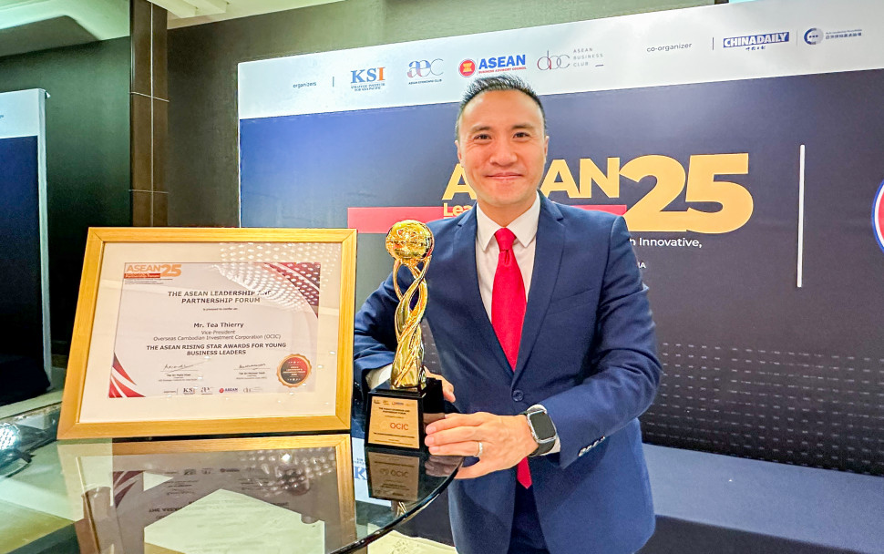

[Podcast]ប្រធានបទ៖ វិធីសាស្ត្រគ្រប់គ្រងការធ្វើការងារឲ្យបានល្អ និងរួមការងារជាក្រុម
ជួបជាមួយលោក នី ម៉េងងី ដែលជាបុគ្គលិកក្រុមហ៊ុនឯកជនមួយឈ្មោះ សប្បាយ ឌីជីថល ផ្លាស់ ដែលលោកចូលរួម ជជែកអំពីជ្រុងមួយនៃការធ្វើការងារ ជាក្រុមឲ្យបានល្អ និងការរក្សាផ្លូវចិត្តក្នុងការបំពេញការងារ ទោះបីក្នុងកាល:ទេស:ណា ក៏លោករក្សានៅគំនិតវិជ្ជមានចំពោះខ្លួនឯងទៅកាន់មិត្តរួមការងារ។ ស្តាប់ក្នុង Podcast នឹងបង្ហាញនូវបទពិសោធ របស់ភ្ញៀវកិត្តយសគាត់អញ្ជើញចូលមកចែករំលែក ជូនប្រិយមិត្តអ្នកស្តាប់ Podcast ខាងក្រោមទាំងអស់គ្នា៖ ចូលស្តាប់ Podcasts តាមរយៈ Link ខាងក្រោម៖

[Podcast]ប្រធានបទ៖ តើគ្រូបង្រៀនមានភារកិច្ច និងតួនាទីអ្វីខ្លះ? ឲ្យសិស្សចាប់បានការសិក្សាល្អ?

ជួបជាមួយអ្នកគ្រូ ឈិន ចាន់ដាឡែន ជាអ្នកគ្រូបង្រៀននៅ សាលារៀនសុវណ្ណភូមិ សាខាច្បារអំពៅ ជាសាលាឯកជន។ អ្នកគ្រូចូលរួមបញ្ចេញយោបល់ នឹងជជែកអំពី គន្លឹះ ក៏ដូចជាតួនាទីរបស់គ្រូបង្រៀន និងតិចនិចក្នុងបង្រៀនសិស្សឲ្យចាប់អារម្មណ៍ល្អចំពោះការសិក្សា នឹងការសហការជិតស្និតជាមួយអាណាព្យាបាលសិស្សក្នុងជំនាញផ្ទាល់របស់អ្នកគ្រូ ជាមួយ Podcast របស់យើង។ ស្តាប់ក្នុង Podcast នឹងបង្ហាញនូវបទពិសោធ របស់ភ្ញៀវកិត្តយសគាត់អញ្ជើញចូលមកចែករំលែក ជូនប្រិយមិត្តអ្នកស្តាប់ Podcast ខាងក្រោមទាំងអស់គ្នា៖ ចូលស្តាប់ Podcasts តាមរយៈ Link ខាងក្រោម៖
អ្នកគ្រូ ឈិន ចាន់ដាឡែន
តើគ្រូបង្រៀនមានភារកិច្ច និងតួនាទីអ្វីខ្លះដើម្បីឲ្យសិស្សចាប់បានការសិក្សាល្អ?
[Podcast]ប្រធានបទ៖តិចនិចគោលដៅ អ្នកនិយាយជាសាធារណៈ ឬវិទ្យុ និងពិធីការីនី TVឲ្យបានល្អ

ជួបជាមួយកញ្ញា ព្រំ រីតា អាជីពជាពីធីការីនី និងអ្នកអត្ថាធិប្បាយវោហារសព្ទ័របស់វិទ្យុ ហង្សមាស យើងជជែកអំពី គន្លឹះ និងតិចនិចប្រើប្រាស់សម្លេង និងធ្វើដូចម្តេចឲ្យមានភាពក្លាហាន ក្នុងការនិយាយ ហើយទទួលបានការចាប់អារម្មណ៍ពីប្រិយមិត្តអ្នកទស្សនា ឬអ្នកគាំទ្រការស្តាប់សម្លេង និងឲ្យត្រូវទៅតាមកម្មវិធីនីមួយៗ។ ស្តាប់ក្នុង Podcast នឹងបង្ហាញនូវបទពិសោធ របស់ភ្ញៀវកិត្តយសគាត់អញ្ជើញចូលមកចែករំលែក ជូនប្រិយមិត្តអ្នកស្តាប់ Podcast ខាងក្រោមទាំងអស់គ្នា៖ Nuon Visal, [5/30/2025 8:39 PM] ចូលស្តាប់ Podcasts តាមរយៈ Link ខាងក្រោម៖
កញ្ញា ព្រំ រីតា
តិចនិចគោលដៅនិយាយជាសាធារណ: ឬវិទ្យុ និងពិធីការីនីTV ឲ្យបានល្អ
ឆ្នាំនេះ! ធនាគារជាតិ ប្រឡងរើសមន្រ្តីជំនាញបច្ចេកវិទ្យានិងបច្ចេកទេសពាក់ព័ន្ធ ២៥រូប

ធនាគារជាតិនៃកម្ពុជា កំពុងជ្រើសរើសបុគ្គលិកក្របខ័ណ្ឌមន្រ្តីក្រមការ “ខ” ទាំងពីរភេទចំនួន ២៥ រូបដើម្បីចូលបម្រើការងារឆ្នាំ ២០២២ ។ បេក្ខជនទាំងពីរភេទត្រូវមានលក្ខណៈសម្បត្តិ ដូចខាងក្រោម៖ មានសញ្ជាតិខ្មែរ មានអាយុច្រើនបំផុត ៣០ឆ្នាំ(គិតត្រឹមថ្ងៃឈប់ទទួលពាក្យ) មានចំណេះដឹងភាសាអង់គ្លេស មានសញ្ញាប័ត្រជំនាញ ព័ត៌មានវិទ្យា ឬជំនាញបច្ចេកទេសពាក់ព័ន្ធ មានសុខភាព និងមានចំណេះដឹង និងបទពិសោធន៍ ការងារពាក់ព័ន្ធដូចជា៖ ផ្នែកអភិវឌ្ឃកម្មវិធី, ផ្នែកគ្រប់គ្រងប្រព័ន្ធបណ្ដាញ, ផ្នែកគាំទ្រប្រព័ន្ធទូទាត់ ផ្នែកគ្រប់គ្រងកម្មវិធី និងផ្នែកសុវត្ថិភាពព័ត៌មានវិទ្យា។ កាលបរិច្ឆេទឈប់ទទួលពាក្យ៖ ថ្ងៃទី១៤ មករា ២០២២ ចំពោះ ទីតាំង មុខវិជ្ជានិងថ្ងៃប្រឡងជម្រាបជូននៅពេលក្រោយ។
ដាក់ CV ភ្លឹបៗមក! ការងារខ្លឹមៗជិត ២០មុខតំណែង នៅ Sabay កំពុងរង់ចាំ

កំពុងស្វែងរកការងារធ្វើ ឬ ចង់រកកន្លែងការងារថ្មីដែលប្រៀបដូចជាគ្រួសារតែមួយ មែនទេ? បើមែន
ឱកាសល្អមកដល់ហើយ! Sabay ដែលជាក្រុមហ៊ុនកម្សាន្ត និងផ្សព្វផ្សាយផ្នែកឌីជីថលនាំមុខគេនៅកម្ពុជា
កំពុងត្រូវការបុគ្គលិកជាច្រើនមុខតំណែង ដែលមានដូចខាងក្រោម៖
១. អ្នកសរសេរព័ត៌មាន ១រូប (ផ្នែកព័ត៌មានកម្សាន្ត)
២. អ្នកសរសេរព័ត៌មានផ្នែក PR មានបទពិសោធន៍ ២រូប
៣. អ្នកសរសេរព័ត៌មានផ្នែក PR មិនមានបទពិសោធន៍ ១រូប
៤. Software Project Manager ១រូប
៥. Business Development Manager ១រូប
៦. Social Media Manager ១រូប
៧. QA Developer ១រូប
៨. Senior Backend Developer ១រូប
៩. Backend Developer ៣រូប
១០. Frontend Developer ២រូប
១១. System Engineer ១រូប
១២. Video Editor (ផ្នែក Game) ១រូប
១៣. Graphic Designer (ផ្នែក Game) ១រូប
១៤. Media Production Coordinator (ផ្នែក Game) ១រូប
១៥. Marketing Coordinator (ផ្នែក Game) ១រូប
១៦. Senior Client Success Executive ១រូប
១៧. Account ១រូប
ដើម្បីដឹងលម្អិតពីមុខតំណែងនីមួយៗ សូមចូលទៅកាន់ http://careers.sabay.com/ ។
Nuon Visal, [5/30/2025 8:39 PM]
បើចាប់អារម្មណ៍មុខតំណែងណាមួយ និងចង់ក្លាយជាផ្នែកមួយនៃក្រុមហ៊ុន Sabay សូមផ្ញើ CV របស់លោកអ្នកទៅកាន់អុីមែល
hr@sabay.com ។ រាល់ចម្ងល់ សូមទាក់ទងតាមរយៈលេខទូរសព្ទ Tel: 086 73 75 54 / 099 470 726 ៕
ឱកាសការងារមកដល់ទៀតហើយ! អាចស្វែរកការងារនៅប្រាសាក់បាន នៅក្នុងពិព័រណ៍ការងារ ស្អែកនេះ

យោងតាមសេចក្ដីប្រកាសព័ត៌មានរបស់ ប្រាសាក់ ឲ្យដឹងថា នៅថ្ងៃទី ២ និងទី ៣ ខែវិច្ឆិកា ឆ្នាំ ២០១៩ ខាងមុខនេះ
ប្រាសាក់ ដែលជាគ្រឹះស្ថានហិរញ្ញវត្ថុដ៏ធំជាងគេនៅកម្ពុជា និងជានិយោជកនៃជម្រើស
នឹងចូលរួមក្នុងព្រឹត្តិការណ៍ពិព័រណ៍ការងារ និងផលិតភាពជាតិ ឆ្នាំ 2019 នៅមជ្ឈមណ្ឌលសន្និបាតនិងពិព័រណ៍កោះពេជ្រ
ចាប់ពីម៉ោង ៨ ព្រឹក រហូតដល់ម៉ោង ៨ យប់ ដើម្បីចែករំលែកបទពិសោធន៍ និងផ្តល់ឱកាសការងារជាច្រើនមុខតំណែងដល់និស្សិត
និងបេក្ខជនដែលកំពុងស្វែងរកការងារធ្វើ។
សូមបញ្ជាក់ថា ប្រាសាក់ ជាគ្រឹះស្ថានហិរញ្ញវត្ថុដែលមានបទដ្ឋានការងារច្បាស់លាស់ បរិយាកាសការងារល្អ
ទទួលបានអត្ថប្រយោជន៍ច្រើន ធ្វើការនៅជិតផ្ទះ អាចអភិវឌ្ឍនិងបង្កើនសមត្ថភាពខ្លួន ផ្តល់និរន្តរភាពការងារយូរអង្វែង
ជាពិសេសទៅទៀតនោះគឺគោរពតាមច្បាប់ការងារនៃព្រះរាជាណាចក្រកម្ពុជា។
នៅក្នុងកម្មវិធីនេះ បេក្ខជនទាំងអស់អាចដាក់ពាក្យ និងទទួលបានការប្រឹក្សាអំពីអាជីពការងារ
ជាមួយក្រុមការងារជ្រើសរើសបុគ្គលិករបស់ប្រាសាក់ បានភ្លាមៗ ដោយភាពរាក់ទាក់ និងស្និទ្ធស្នាលបំផុត។
ឱកាសការងារជាច្រើនមុខតំណែងដែលប្រាសាក់កំពុងផ្ដល់ជូនសម្រាប់បម្រើការងារនៅសាខាទាំង ២៥ ខេត្ត-រាជធានី៖
បេឡាធិការ
មន្ត្រីឥណទាន
មន្ត្រីឥណទានសហគ្រាសខ្នាតតូច និងមធ្យម
មន្ត្រីរដ្ឋបាលកម្ចី
មន្ត្រីបម្រើសេវាអតិថិជន
បុគ្គលិកផ្នែកលក់និងទីផ្សារ
បុគ្គលិកផ្នែកហិរញ្ញវត្ថុ
បុគ្គលិកផ្នែកសវនកម្ម
បុគ្គលិកផ្នែកព័ត៌មានវិទ្យា
បុគ្គលិកផ្នែកសេវាធនាគារ
បុគ្គលិកផ្នែកធនធានមនុស្ស
បុគ្គលិកផ្នែកគ្រប់គ្រងហានិភ័យ
បុគ្គលិកផ្នែកប្រព័ន្ធធនាគារស្នូល
បុគ្គលិកស្ម័គ្រចិត្ត
ឱកាសល្អ! អ្នកចង់ធ្វើការនៅ ក្រសួងសាធារណការ និងដឹកជញ្ជូន

សេចក្តីជូនដំណឹងស្តីពីការប្រឡងជ្រើសរើសបេក្ខជន សិស្ស និស្សិត មន្រ្តីរាជការ
អោយចូលបម្រើការងារក្នុងក្របខណ្ឌក្រសួងសាធារណការ និងដឹកជញ្ជូនសម្រាប់ឆ្នាំ២០១៩។
អាចដាក់ពាក្យចាប់ពីថ្ងៃទី០៨ កក្កដា ដល់ ០៨ កញ្ញា ឆ្នាំ២០១៩
(ម៉ោង៖ ព្រឹក ៧:៣០ - ១១:៣០ នាទី | រសៀល ១២:០០ - ១៧:០០នាទី )
ទីកន្លែងទទួលពាក្យ៖ បេក្ខជនត្រូវមកទទួលពាក្យស្នើសុំចុះឈ្មោះប្រឡង នៅទីស្ដីការក្រសួងសាធារណការ
និងដឹកជញ្ជូន(នាយកដ្ឋានបុគ្គលិក) ដែលមានអាសយដ្ឋានស្ថិតនៅកាច់ជ្រុងមហាវិថីព្រះនរោត្តម និងវិថីលេខ ១០៦
និងនៅតាមបណ្ដាមន្ទីរសាធារណការ និងដឹកជញ្ជូនរាជធានី-ខេត្ត។
ព័ត៌មានបន្ថែម៖ ០១២ ៨៩៣ ០៥៧ | ០១២ ៣៩៤ ៤៤០

អត្ថបទពេញនិយម
កអគ្គរាជទូត តំណាងកម្ពុជា នៅតាមស្ថានទូត
 វត្ដមានតារាល្បីៗរបស់ខ្មែរ និងថៃ
វត្ដមានតារាល្បីៗរបស់ខ្មែរ និងថៃ
ពិធីសិរីមង្គលសែរាជវង្សានុវង្សខ្មែរដ៏ធំ
 សហព័ន្ធកីឡាកាយវប្បកម្មកម្ពុជា
សហព័ន្ធកីឡាកាយវប្បកម្មកម្ពុជា
អត្ថបទថ្មី
SmartHome ដំណោះស្រាយសុវត្ថិភាពស្រួល
 ពានរង្វាន់នាយកប្រតិបត្តិឆ្នើមប្រចាំឆ្នាំ២០២៥
OCIC ត្រៀមប្រកាសបើកលក់ដីឡូតិ៍ខ្នាតវីឡា
ព្រំ វណ្ណារឿន បានកោតសរសើរនិងវាយតម្លៃ
អត្ថបទពេញនិយម
កអគ្គរាជទូត តំណាងកម្ពុជា នៅតាមស្ថានទូត
វត្ដមានតារាល្បីៗរបស់ខ្មែរ និងថៃ
ពិធីសិរីមង្គលសែរាជវង្សានុវង្សខ្មែរដ៏ធំ
សហព័ន្ធកីឡាកាយវប្បកម្មកម្ពុជា
អត្ថបទថ្មី
SmartHome ដំណោះស្រាយសុវត្ថិភាពស្រួល
ពានរង្វាន់នាយកប្រតិបត្តិឆ្នើមប្រចាំឆ្នាំ២០២៥
OCIC ត្រៀមប្រកាសបើកលក់ដីឡូតិ៍ខ្នាតវីឡា
ព្រំ វណ្ណារឿន បានកោតសរសើរនិងវាយតម្លៃ
លោក នី ម៉េងងី
[Podcast]ប្រធានបទ៖ វិធីសាស្ត្រគ្រប់គ្រងការធ្វើការងារឲ្យបានល្អ និងរួមការងារជាក្រុម